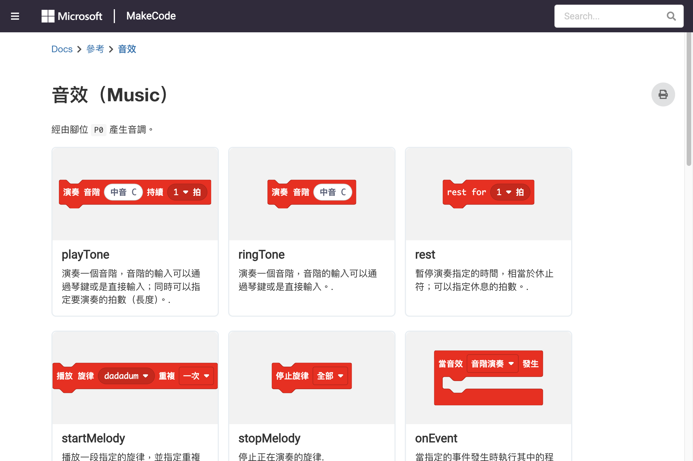

單元 6：Music 積木
play tone、music ring、tempo、自訂旋律
6.1 Music 積木總覽
Music 分類讓 Micro:bit 透過內建蜂鳴器播放音樂和音效。
| 積木 | 參數 | 說明 |
|---|---|---|
play tone | frequency (Hz), duration (ms) | 播放單一音符 |
play melody | melody (string), tempo (bpm) | 播放旋律字串 |
music ring | — | 播放內建鈴聲 |
music play | — | 播放已編排的音樂 |
rest | duration (ms) | 播放休止符（靜音） |
set tempo | tempo (bpm) | 設定播放速度（每分鐘拍數） |
tempo | — | 取得目前 tempo |
volume | value (0-255) | 設定音量 |
set volume | value (0-255) | 設定音量（別名） |
on loud sound | — | 偵測到大聲時觸發 |
sound level | — | 讀取目前音量 |
6.2 播放單一音符
play tone
play tone Middle C for 1 beat
播放中央 C 音符。MakeCode 提供完整的音階選擇：
| 音階 | 頻率 | 說明 |
|---|---|---|
C4 (Middle C) | 262 Hz | 中央 C |
D4 | 294 Hz | Re |
E4 | 330 Hz | Mi |
F4 | 349 Hz | Fa |
G4 | 392 Hz | Sol |
A4 | 440 Hz | La |
B4 | 494 Hz | Si |
C5 | 523 Hz | 高音 C |
可選擇的節拍長度：
| 節拍 | 說明 |
|---|---|
1 beat | 一拍（約 0.5 秒） |
1/2 beat | 半拍（約 0.25 秒） |
1/4 beat | 四分之一拍（約 0.125 秒） |
2 beats | 兩拍（約 1 秒） |
自訂頻率
play tone 440 for 1 beat
你也可以直接輸入任意 Hz 頻率值。

Music 積木參考

旋律範例
6.3 播放旋律
music ring
on start music ring
播放內建的鈴聲旋律。
play melody（字串旋律）
使用字串編寫旋律，每個字元代表一個音符：
| 字元 | 音符 | 字元 | 音符 |
|---|---|---|---|
C | Do (C4) | c | 高音 Do (C5) |
D | Re (D4) | d | 高音 Re (D5) |
E | Mi (E4) | e | 高音 Mi (E5) |
F | Fa (F4) | f | 高音 Fa (F5) |
G | Sol (G4) | g | 高音 Sol (G5) |
A | La (A4) | a | 高音 La (A5) |
B | Si (B4) | b | 高音 Si (B5) |
R | 休止符 | : | 升高八度 |
. | 降低八度 | - | 延長音符 |
play melody "C E G c G E C" for 1/2 beat
6.4 節奏與速度
set tempo
on start set tempo to 120 bpm play tone Middle C for 1 beat play tone E4 for 1 beat play tone G4 for 1 beat
BPM（Beats Per Minute）= 每分鐘拍數。120 bpm 表示每分鐘 120 拍，即每拍 0.5 秒。
| BPM | 速度感 | 每拍時間 |
|---|---|---|
| 60 | 慢速 | 1 秒 |
| 120 | 中速 | 0.5 秒 |
| 180 | 快速 | 0.33 秒 |
| 240 | 極快 | 0.25 秒 |
6.5 音量控制
on start volume 128 music ring
音量範圍 0（靜音）到 255（最大）。
6.6 範例：生日快樂歌
on start play melody "C C D C F E" for 1/2 beat pause 200 play melody "C C D C G F" for 1/2 beat pause 200 play melody "C C c A F E D" for 1/2 beat pause 200 play melody "Bb Bb A F G F" for 1/2 beat
6.7 範例：按鈕演奏
on button A pressed play tone Middle C for 1 beat on button B pressed play tone E4 for 1 beat on button A+B pressed play tone G4 for 1 beat
JavaScript 對應程式碼：
input.onButtonPressed(Button.A, () => {
music.playTone(262, 1)
})
input.onButtonPressed(Button.B, () => {
music.playTone(330, 1)
})
input.onButtonPressed(Button.AB, () => {
music.playTone(392, 1)
})
看完這單元你應該能：
- 使用 play tone 播放單一音符
- 使用 play melody 播放自訂旋律
- 調整 tempo 控制播放速度
- 使用 volume 控制音量大小
- 結合按鈕事件製作互動音樂